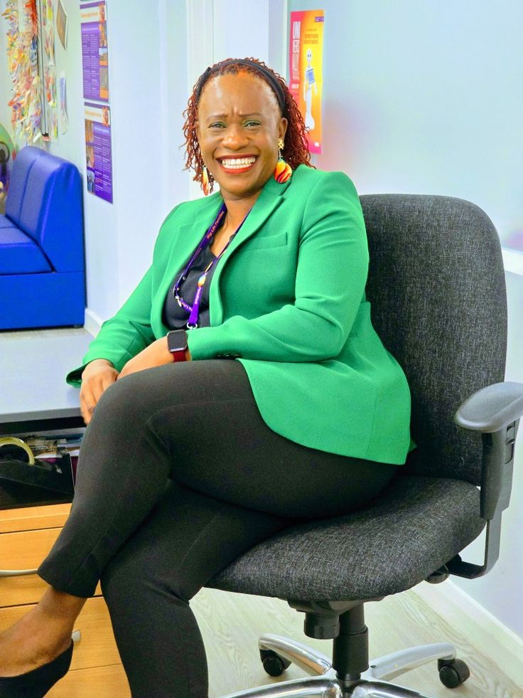
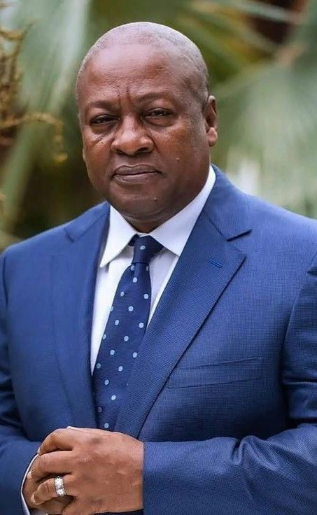
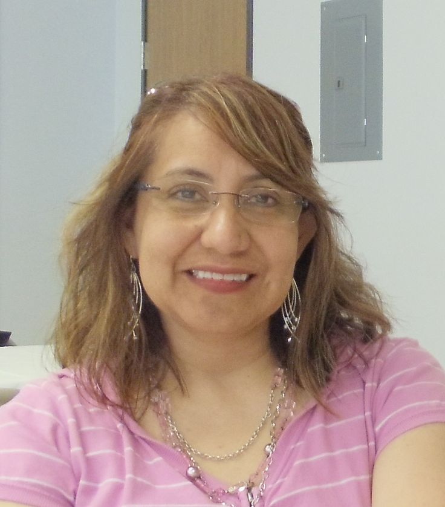
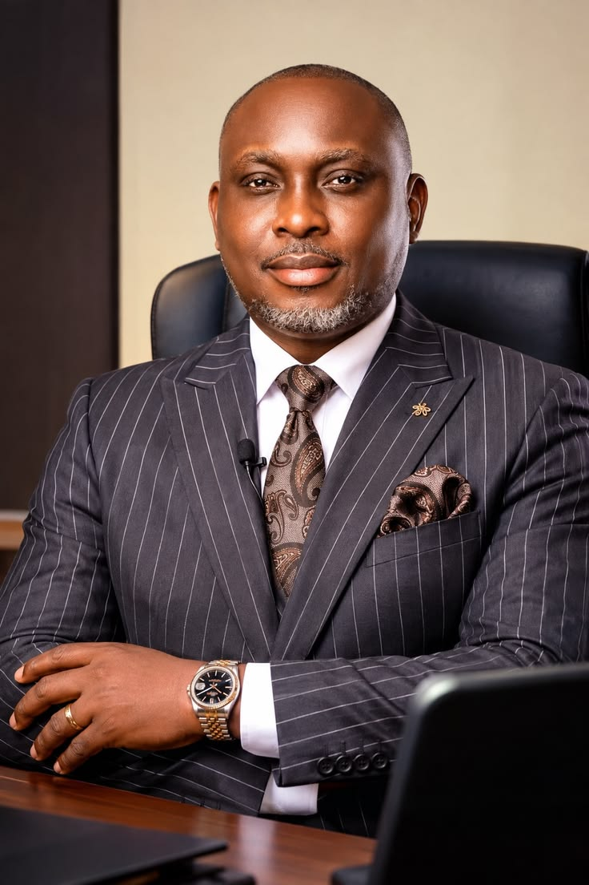

Featured Speakers

Dr. Sarah Nakato
Coffee Research Scientist
National Agricultural Research Organisation (NARO)
Dr. Nakato researches improved coffee varieties and sustainable agricultural practices. She works with farmers to improve coffee quality and productivity.

Mr. James Okello
Coffee Production Specialist
Uganda Coffee Development Authority (UCDA)
James specialises in modern coffee production techniques and farmer training. He promotes sustainable methods that improve agricultural yields.

Ms. Maria Lopez
International Coffee Trade Consultant
Global Coffee Trade Network
Maria advises coffee businesses on international trade and market development. She helps producers understand global consumer trends and export opportunities.

Dr. Robert Ssemanda
Agricultural Innovation Expert
Makerere University
Dr. Ssemanda focuses on agricultural research and technological innovation. His work explores how technology can improve coffee farming and processing.
Additional Speakers
| Name | Organisation | Country | Session Title |
|---|---|---|---|
| Mr. David Mensah | African Coffee Association | Ghana | Global Coffee Market Trends |
| Dr. Grace Atim | Ministry of Agriculture | Uganda | Sustainable Coffee Production |
| Mr. Peter Kato | East African Investment Forum | Uganda | Investment Opportunities |
| Ms. Amina Hassan | International Farmers Network | Kenya | Empowering Smallholder Farmers |
Call for Papers
Researchers, academics, coffee professionals and industry experts are invited to submit original research papers and presentations for the Uganda International Coffee Expo 2026.
Submissions should focus on coffee production, agricultural innovation, sustainability, processing technologies and international coffee trade. All papers should include a clear title, author details, an abstract and relevant findings.
Key Submission Dates
| Milestone | Date | Status |
|---|---|---|
| Call for Papers Opens | 1 June 2026 | Completed |
| Submission Deadline | 15 August 2026 | Closed |
| Acceptance Notifications | 1 September 2026 | Scheduled |